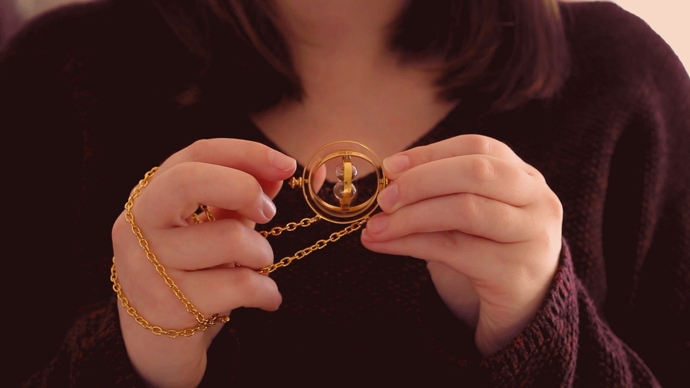
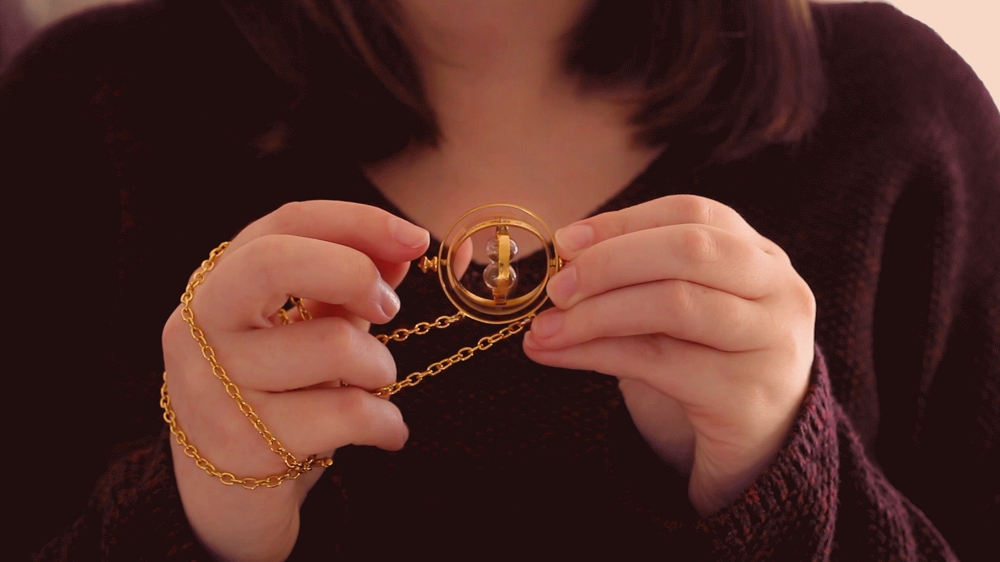
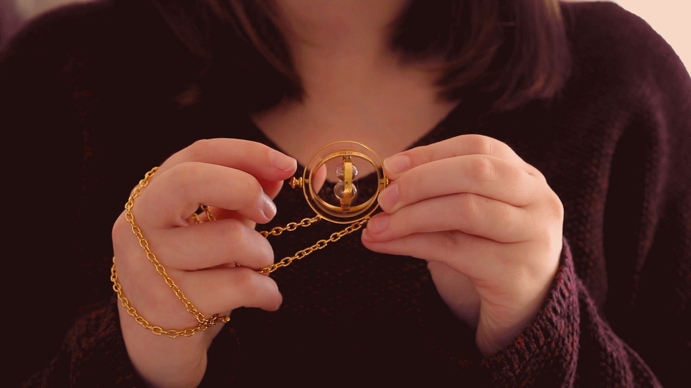

When I get bored, I like to create things. Cinemagraphs are still photographs in which a minor and repeated movement occurs, forming a video clip. They are published as an animated GIF or in other video formats, and can give the illusion that the viewer is watching an animation. They combine some of my favorite things; photography, video and a touch of magic to make something special.
